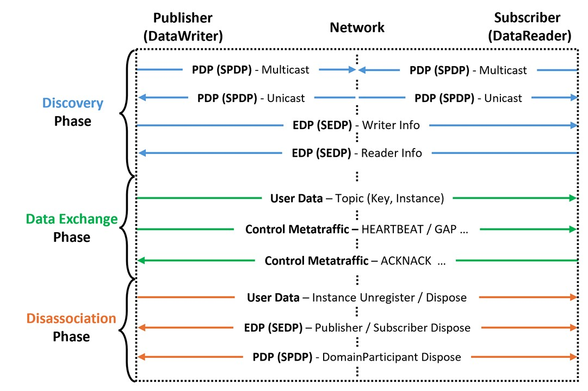

DDS QoS Policy Guide
A plain-language reference to the 16 DDS QoS policies that shape every ROS 2 topic.
QoS policies are the settings that decide how a topic behaves, for example whether delivery is guaranteed, whether a node that joins late still receives past messages, and how long each message stays in the queue. Every policy has its own page here that explains what it does, the values it accepts, and how it acts at each stage of a connection. Start anywhere or read straight through, then follow the links to the Dependency Map to see how policies affect one another, or to Rules & Evidence to see which combinations QoS Guard flags.
16 QoS Policies
01
ENTITY FACTORYENTFAC — discovery timing
02PARTITIONPART — logical segmentation
03USER DATAUSRDATA — participant metadata
04GROUP DATAGRPDATA — pub/sub metadata
05TOPIC DATATOPDATA — topic metadata
06RELIABILITYRELIAB — delivery guarantee
07DURABILITYDURABL — late joiners
08DEADLINEDEADLN — temporal constraints
09LIVELINESSLIVENS — publisher activity
10HISTORYHIST — sample retention
11RESOURCE LIMITSRESLIM — cache bounds
12LIFESPANLFSPAN — sample validity
13OWNERSHIPOWNST — multiple writers
14DESTINATION ORDERDESTORD — sample ordering
15WRITER DATA LIFECYCLEWDLIFE — instance cleanup
16READER DATA LIFECYCLERDLIFE — purge timing
Lifecycle of DDS Communication

1. Discovery Phase
Entities with the same topic are matched through PDP/EDP protocols and
established after verifying QoS compatibility.
established after verifying QoS compatibility.
2. Data Exchange Phase
Matched pairs exchange user data and control metatraffic (HEARTBEAT/ACKNACK) to
ensure reliability and timeliness.
ensure reliability and timeliness.
3. Disassociation Phase
Communication ends by disposing instances or removing GUIDs, followed by
purging all history after a timeout.
purging all history after a timeout.
Lifecycle Mapping
QoS Policy
Discovery
Data Exchange
Disassociation
ENTITY_FACTORY
O
PARTITION
O
USER_DATA
O
GROUP_DATA
O
TOPIC_DATA
O
RELIABILITY
O
O
O
DURABILITY
O
O
O
DEADLINE
O
O
LIVELINESS
O
O
O
HISTORY
O
RESOURCE_LIMITS
O
LIFESPAN
O
OWNERSHIP
O
O
O
DESTINATION_ORDER
O
O
WRITER_DATA_LIFECYCLE
O
READER_DATA_LIFECYCLE
O
Summary: Metadata, Matching, Cache, and Lifecycle
Category
QoS
One-line summary
Discovery timing
ENTFAC
When entities participate in discovery
Logical segmentation
PART
Partition names to separate or group topic flows
Metadata
USRDATA, GRPDATA, TOPDATA
Application info on Participant / Pub-Sub / Topic
Delivery guarantee
RELIAB
best_effort vs reliable (retransmission, ordering)
Late joiners
DURABL
How much past data late joiners can receive
Temporal constraints
DEADLN, LIVENS
Period (deadline) monitoring; Publisher liveness
Cache
HIST, RESLIM, LFSPAN
How many samples, upper bounds, validity duration
Multiple writers
OWNST, DESTORD
Single owner vs shared; order by reception vs source timestamp
Instance cleanup
WDLIFE, RDLIFE
Dispose on unregister; when to purge disposed/no-writer samples
Next steps
| Section | Use it for |
|---|---|
| Dependency Map | See how the policies affect one another across all 40 rules |
| Rules & Evidence | Open each rule with its conflict condition, engine checks, and the evidence behind it |